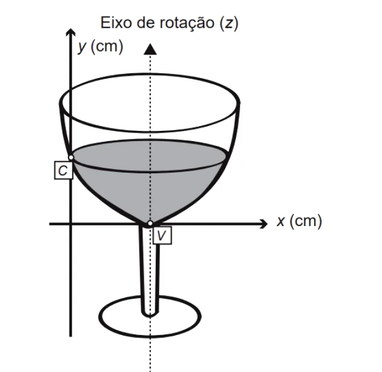

A parte interior de uma taça foi gerada pela rotação de uma parábola em torno de um eixo z, conforme mostra a figura. A função real que expressa a parábola, no plano cartesiano da figura, é dada pela lei f(x) = 3/2 x2 – 6x + C, onde C é a medida da altura do líquido contido na taça, em centímetros. Sabe-se que o ponto V, na figura, representa o vértice da parábola, localizado sobre o eixo x. Nessas condições, a altura do líquido contido na taça, em centímetros, é
